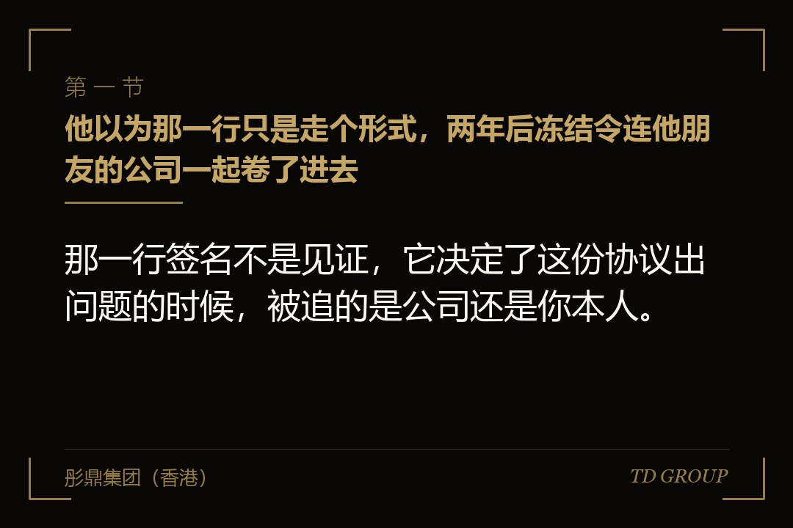
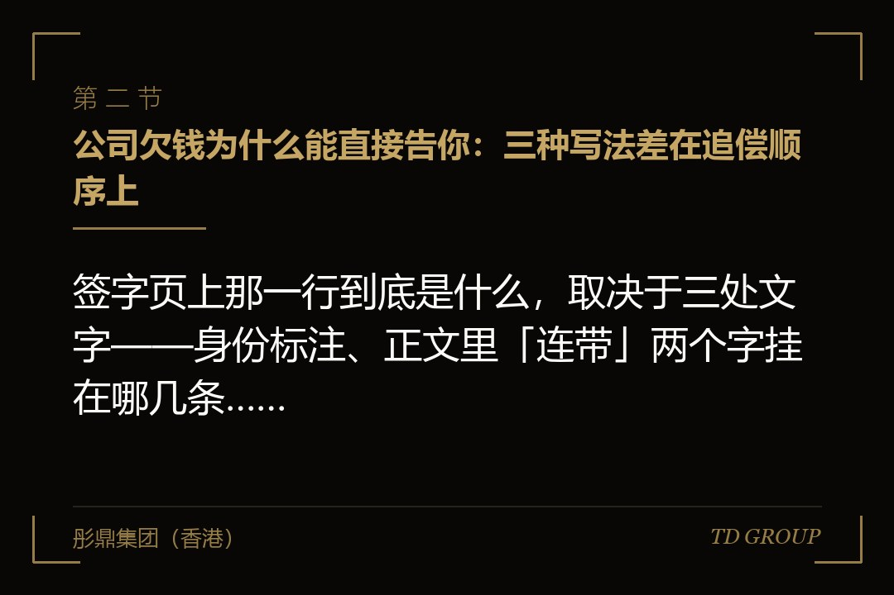
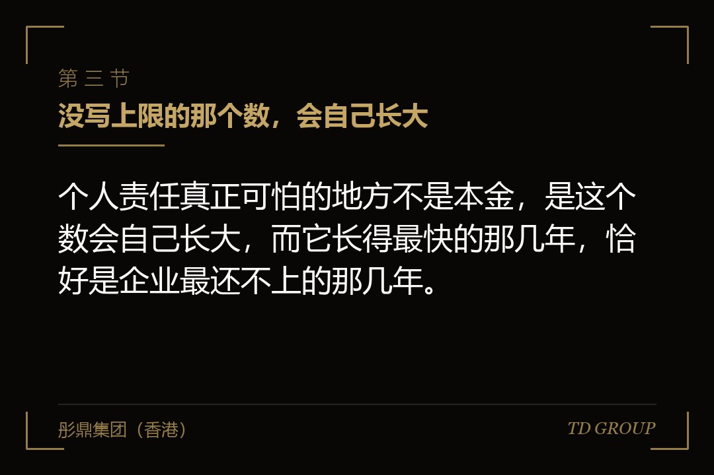

一、他以为那一行只是走个形式，两年后冻结令连他朋友的公司一起卷了进去

结论先行：那一行签名不是见证，它决定了这份协议出问题的时候，被追的是公司还是你本人。
一家做宠物食品的企业，在某一轮融资的签约日走完了全部流程。协议几十页，创始人和团队逐条抠的是估值、稀释比例、董事席位和几项否决权。最后一页签字的时候，公司这一栏盖章，旁边还有一行「创始人（签字）：____」。他问了一句这是什么，对方经办人说各方都要签，走个形式。他签了。
两年后公司没能在协议约定的时限内完成合格上市，回购被触发。谈判持续了几个月没有结果，投资人提起仲裁，并同时申请了财产保全。
裁定下来那天，被冻结的不只是公司账户，还有他个人名下的两个银行账户、一套自住房产和一辆车，另外还有他在另一家与本次融资毫无关系的公司里持有的股权——那家公司是他和朋友合伙做的，业务、股东、资金跟宠物食品这一摊没有交集。合伙人打电话过来问怎么回事的时候，他才明白两年前那一笔签的是什么。
他后来把协议翻了一遍，找到了那句话。它不在签字页上，在正文中间某一条的末尾：「创始人就本条项下公司的全部义务向投资人承担连带责任。」而定义条款里，「创始人」被明确列入了「义务人」的范围。签字页那一行的身份标注写的也不是「法定代表人」，是「创始人（作为义务人）」。
这件事的机制不复杂，复杂的是它平时完全看不出来：公司正常经营的年份里，这一行字不产生任何效果，不占用额度，不出现在报表上。它只在一种情况下显形，而那种情况恰恰是企业最没有余力应付的时候。
本文讲的就是这一步：责任主体从公司挪到创始人个人，以及个人这一侧被执行之后会发生什么。
有几件相邻的事此处只作一句话交代：回购在什么情况下被触发、回购总额按什么公式算、几个投资人怎么排顺位，是讲对赌触发之后怎么算账时另有展开的话题；对赌条款本身怎么设、哪几条是红线，也不在这里说；陈述与保证的赔偿范围怎么界定、免赔起点与责任上限怎么设，是另外的话题，此处不展开；创始人替本公司以外的朋友公司签的对外担保怎么清理，与本文说的是完全不同的两件事。
二、公司欠钱为什么能直接告你：三种写法差在追偿顺序上

结论先行：签字页上那一行到底是什么，取决于三处文字——身份标注、正文里「连带」两个字挂在哪几条、以及定义条款把不把创始人算进「义务人」。这三处对不上的时候，以正文条款为准。
常见的写法有三种，它们在追偿顺序上的差别很大。
写法一，创始人只是代表公司签字。签字栏上方是公司名称，下方标注「法定代表人（签字）」或者「授权代表（签字）」。这种情况下签名的效果归属于公司，创始人个人不因此承担责任。这才是很多人以为自己在做的那件事。
写法二，创始人作为共同义务人或者连带责任人。表述通常是「创始人与公司就上述义务向投资人承担连带责任」。连带的含义是：投资人可以只起诉公司、只起诉创始人，也可以把两个一起列为被告；既不需要先向公司主张，也不需要先证明公司还不上。实践中投资人多半会同时起诉，因为一并申请保全的效率更高。
写法三，创始人承担补充责任，或者以一般保证的方式承担责任。表述通常是「公司不能清偿的部分，由创始人承担补充责任」，讲究一点的还会加上「投资人须先就公司财产申请强制执行，取得未能受偿的执行文书后，方可向创始人主张」。这一句的实际效果，是给创始人加了一道时间与程序上的缓冲：公司这一侧走完执行程序通常要相当长的时间，这期间创始人个人的财产一般不会被直接处置，而那往往就是企业自救的窗口。
从连带改成补充，是这一整篇里性价比最高的一处改动——它不减少投资人最终能拿到的钱，只改变先找谁。
一家做工业自动化系统集成的企业在B轮谈判时做过这件事。它的A轮协议写的是连带。B轮投资人要求把全部在先文件重述成一份，创始人趁这个机会提出把个人责任统一改成补充责任，并加上那句「须先就公司财产申请强制执行」。A轮投资人起初不同意，理由是这等于把他们往后排。
创始人的说法是：真到那一步，公司账上的钱和设备是先能变现的，我个人名下的东西变现慢、争议多，你们先执行公司反而拿得快。这个理由对方接受了。三年后公司确实遇到了麻烦，那段时间里他个人账户没有被冻结，公司还能正常付供应商货款，最后是靠一笔并购交易把事情了结的。
如果当年那句话没改，保全会在谈判开始之前就落到他个人账户上，而那笔并购谈判恰恰需要他本人在场、需要他能出境。
所以拿到协议之后要做的检查很具体：签字页上你名字下面那行小字写的是什么身份；用检索功能把「连带」两个字在全文找一遍，看它挂在哪几条义务上；翻到定义条款，看「义务人」「担保方」「责任方」这几个定义里有没有你；再对照条款清单，看它里面是不是根本没提这件事——很多时候个人责任是在条款清单谈完之后，由正式协议的起草方直接写进去的。
华尔街彤鼎俱乐部里，企业主在这一项上最常见的说法是，协议正文逐条看过，签字页上自己名字旁边那行身份标注从来没看过。
三、没写上限的那个数，会自己长大

结论先行：个人责任真正可怕的地方不是本金，是这个数会自己长大，而它长得最快的那几年，恰好是企业最还不上的那几年。
没有设上限的个人责任，通常覆盖这么几块。其一是投资本金，也就是当初打进公司的那笔钱。其二是约定的溢价，多数协议按一个约定利率从交割日起逐期累计到实际支付日；这一块随时间线性增长，而且起算点是当年打款那一天，不是纠纷发生那一天。
其三是逾期利息，从回购触发或者约定的支付期限届满起算，按协议约定的标准计算，与前一块可能并行。其四是实现债权的费用：律师费、仲裁费或者诉讼费、保全费、申请保全提供担保产生的保函费用，写得细的协议还会把差旅与鉴定评估费用一并列进去。
这四块有一个共同的性质：只要事情没了结，它就只往上走。而现实里从谈判破裂到提起程序、从立案到裁决、从裁决到执行，每一段都要时间。企业方常有一个错觉，觉得拖着对自己有利，因为拖着还不用付钱；实际上拖延对这个数字是单向不利的。
一家做冷链物流的企业走过这条路。它的回购触发发生在行业最难的那一年，公司账上没有可用于回购的资金，创始人自己也拿不出来。谈判从触发那年拖到接近两年后，中间双方换过两轮方案都没谈成，最后是在仲裁程序里达成的调解。
调解协议上那个数字，比当年投资人打进来的本金高出了接近一半——多出来的部分里溢价占大头，实现债权的费用占一小块但也不是小数。创始人事后说，早知道拖两年要多付这么多，头一年就该接受那个当时觉得太亏的方案。
从这件事能提炼出签字阶段要争的两条。其一是责任总额封顶：把创始人个人承担的金额限定在一个可以算出来的范围内，比如以投资本金加上按约定利率计算的溢价为限，明确不包括实现债权的费用；更进一步的做法是直接写一个封顶数字。
其二是溢价的停算时点：约定自投资人提起争议解决程序之日起，溢价停止累计。
这两条有一个说得通的理由——溢价的作用是补偿资金的时间成本，而进入争议程序之后，钱能不能拿回来已经不取决于企业还在不在赚钱了，继续累计只会让最终的可执行金额超出创始人个人的偿付能力，对投资人自己也不是好结果。
四、配偶那一栏：为什么对方一定要她也签
结论先行：投资人要配偶签那一栏，要的不是她的钱，是让这笔债务在执行阶段能够触及夫妻共同财产。
个人债务与夫妻共同债务在执行环节的差别是实质性的。如果被认定为创始人的个人债务，执行原则上针对他个人的财产以及夫妻共同财产中属于他的那一部分，而共同财产的分割本身要另走程序，耗时且有争议空间。如果被认定为夫妻共同债务，执行可以直接及于夫妻共同财产，路径短得多。投资人要配偶在协议上签字，或者要求出具一份「同意并确认」的声明，作用就是把这层认定上的争议提前消化掉。
配偶那一栏通常有几种形态：签字页上直接设「配偶（签字）」一行；单独出具一份配偶同意函；或者在陈述与保证里加一条「创始人已就本协议项下义务取得配偶同意」。最后一种最容易被忽略，它藏在陈述条款里，看起来只是一句陈述，实际效果是把「没取得同意」变成了创始人自己的违约。
不签会被怎么谈，这一点要有心理准备。投资人通常不会因为配偶不签就放弃这笔投资，但会在别处补回来：提高创始人所持股权的质押比例并办理登记、要求追加其他担保物、缩短回购的触发期限、把补充责任改回连带，或者干脆把配偶确认函列为交割的先决条件——那就等于把选择权变成了要不要做这笔交易。
一家做小家电的企业，创始人以家庭原因为由拒签了配偶那一栏，对方的替代方案是把他持有的目标公司股权全部质押给投资人并完成登记。他当时觉得股权还在自己名下、表决权也还在，就答应了。
麻烦出现在后面两年：公司要新设员工持股平台需要划出一部分股权，要引入一笔战略投资需要做增资，甚至要给一位联合创始人补办工商变更，每一步都要先取得质权人的书面同意，而对方的内部审批每次都要走几周。有一次一笔战略投资就因为过了对方的决策窗口而落空。躲开了一个条件，撞上了另一个，而后者对公司经营的干扰更直接。
可谈的方向有几条。其一是把配偶签字换成一份「知悉本次交易」的确认函，只确认知情，不作共同债务的承诺。其二是把配偶责任限定在特定财产上，比如仅以创始人所持目标公司股权中属于夫妻共同财产的那部分为限，不及于家庭的其他资产。其三是约定配偶责任仅在创始人存在故意隐瞒或者提供虚假资料时才被触发。这几条谈成与否取决于交易的整体强弱，但值得提出来——很多协议里配偶那一栏是模板自带的，起草方并没有专门想过它。
另外一件容易被误解的事：签字之后再去做婚内财产约定或者办理析产，通常不能对抗已经形成的债务；财产约定要对债权人发生效力，一般要求债权人知道它的存在。想在纠纷显现之后靠家庭内部的安排把责任隔离开，多数情况下走不通。
五、代持、持股平台、家里人名下的那部分，会不会一起被穿进来
结论先行：执行阶段看的是登记状态，不是真实归属；而在纠纷显现之后做的腾挪，通常既挡不住执行，还会把本来可以谈的事变得不能谈。
先说代持。登记在创始人名下、实际上替别人持有的股权，在执行阶段一般会按登记状态被查封。要把它排除出去，需要另行提起执行异议，举证责任在主张代持的那一侧，而且要拿得出完整的证据链：签署时间在先的代持协议、实际出资的银行流水、历年分红的流向。
这几样凑不齐的时候，「这不是我的」在程序上是一个很被动的位置。反过来，创始人让别人替自己持有的那部分，投资人要触及它路径更长，但并非不可能，尤其是当那部分股权的分红一直打进创始人自己账户的时候。
再说持股平台。创始人在员工持股的有限合伙里担任普通合伙人或者执行事务合伙人的，这是一条与本轮签字完全独立的风险线：普通合伙人对合伙企业的债务承担无限责任。两条线叠在同一个人身上，任何一条被触发，另一条上的资产都在同一个执行程序的射程里。
另外，他在平台里持有的合伙权益本身可以被强制执行，而处置这部分权益往往要处理其他合伙人的优先购买权，实际操作中经常演变成整个激励平台的重新安排——那时候受影响的就不只是他一个人了。
再说家庭成员持股。父母、子女或者其他亲属名下登记的股权，如果确实是他们自己出资、自己行使权利，一般不受影响。两种情形例外：有证据证明由创始人出资并实际支配、登记只是形式的；以及在债务已经形成、纠纷已经显现之后才转过去的。
一家做环保水处理设备的企业提供了一个反面的例子。回购触发之前的几个月，创始人做了两个动作：把名下一处房产过户给了成年子女，把持股平台的执行事务合伙人换成了亲属。
案子进入程序之后，这两个动作都被对方单独拿出来讲了一遍——房产过户被主张撤销，而更换执行事务合伙人并不影响他在变更之前已经形成的责任。
真正的代价不在这两个动作本身，在于它们改变了对方对他的判断：在此之前双方谈的是分期履行加追加担保，在此之后对方不再接受任何以信任为基础的安排。他后来说，那两个动作没有少赔一分钱，却把当时本来还能走的那条路堵死了。
落点很清楚：责任的边界是在签字那一刻画的，不是在出事之后画的。签字之前把范围限定在特定财产上，是完全正当、可以摆到桌面上谈的事；出事之后再腾挪，通常无效，还会把谈判空间一起赔进去。
六、企业垮掉的那天不是判决下来那天，是保全裁定送到银行那天
结论先行：企业不是在败诉那天垮掉的，是在保全裁定送到银行那天垮掉的——而那通常发生在开庭之前。
投资人提起程序时，一般会同时申请财产保全，范围通常按请求的金额确定，可以针对公司，也可以针对被一并列为被告的创始人个人。保全的审查是形式审查，速度快，通常不会先听企业方解释；申请人需要提供担保，而现在多数是买一份保函，成本相对于请求金额来说很低。这几点加在一起，意味着企业方从收到消息到账户被冻结之间，几乎没有反应时间。
账户被冻结的实际效果，比多数人想象的更彻底。冻结之后钱能进不能出：客户回款照样进来，但工资发不出去、社保公积金缴不了、供应商的货款付不了、税款也交不了。这几件事各有各的时点和后果，滞纳与合规记录是一层，员工与供应商的信心是另一层，后者恢复得比前者慢得多。
一家做职业技能培训的机构在这上面栽得很彻底。回购纠纷起诉当天，保全裁定就到了银行，公司主账户与创始人个人账户同时被冻。当时正赶上一批学员的退费与讲师课时费结算，退费退不出去，两周之内零星投诉变成了集体投诉，主管部门介入检查预收费的资金监管情况，招生随之停摆。
半年之后案子以调解结案，金额比对方最初主张的低了不少，从结果上说这场官司谈得不算差；但那时候机构已经错过了整个招生季，团队走了大半。顺序是反的：不是输了官司才垮，是被冻结那天就已经垮了。
签字阶段能为这件事做的准备有几条，都不难提，但要在起草时就写进去。其一是前置程序：约定投资人启动程序之前须先书面通知并给一段约定天数的协商期，期间内达成安排的不再启动。这一条的价值不在拖延，在于把突袭变成有预告的事件，企业至少能安排资金与对外说明的口径。
其二是保全顺序：约定投资人应先就公司财产申请保全，不足以覆盖时再及于创始人个人财产。其三是经营账户的例外：约定不对企业用于支付工资、社保公积金与税费的账户申请保全，或者约定该账户上保留一个约定金额不予冻结。
这一条难度大一些，但理由很正当——把被投企业的工资账户冻住，对投资人自己的回收也没有好处。其四是解除路径：约定创始人提供其他等值担保物之后，投资人应当配合申请解除对经营账户的保全，并约定配合的时限。
需要说明的是，这几条不是让投资人放弃权利，它们改变的只是行使权利的顺序与方式。
七、限制消费与失信记录之后：授信、招投标、下一轮，还有境外主体的董事席位
结论先行：个人连带责任最贵的部分不是赔款，是它把创始人本人变成了公司经营里一个受限的要素——而公司的很多事只有他能办。
生效文书作出之后，如果创始人没有按期履行，通常会进入两个层面的后果。一个是被采取限制消费措施：部分交通工具与舱位不能乘坐，出行安排受到直接影响，境外差旅尤其麻烦。另一个是被纳入失信被执行人名单，这一层是公开可查的，任何一个想查他的人都查得到。
公开可查这件事，杀伤面比多数人预估的宽。银行侧：授信审批会核查实际控制人的执行与失信记录，有在执行的记录时新增授信基本推不动，已有授信到期续做也容易被压缩额度或者被要求追加担保。
招投标侧：不少招标文件把投标人及其实际控制人的失信记录列为否决项，政府采购与国有企业采购尤其如此。资质与补贴侧：企业申报资质、高新认定、专项补贴时的信用核查会看这一项。
融资侧：新一轮投资人的尽职调查一定会查实际控制人的涉诉与执行情况，一条在执行的记录基本上会让这一轮停下来——不是因为投资人不理解，而是因为他没法向自己的投资决策委员会解释这件事。
境外这一侧还有一层。境外上市主体的董事需要做背景调查，交易所、承销商与审计师都会看董事与实际控制人的诉讼与执行记录；存在尚未了结的重大诉讼或者执行记录时，通常需要在申报文件里披露，也可能被要求在了结之前不推进，或者调整董事会的人选安排。对一个本来就在准备境外融资或者境外架构的企业来说，这一条的影响是结构性的。
一家做半导体封装材料的企业遇到的正是这个组合。创始人被限制消费的时候，公司正在推进一条境外产线的客户认证，流程里有一环要求供应商的决策人本人到对方工厂参加技术评审。
他去不了，派了技术总监过去，客户方坚持要能拍板的人到场，认证推迟了一个季度，那一年原本谈好的订单没有落地。几乎同一时间，一家合作多年的银行把一笔到期的流动资金贷款从续贷改成了压缩额度，理由是内部信用核查未通过。责任是他个人的，代价落在了公司身上，而公司当时正是要靠新订单和现金流去解决那笔回购的。
这一节没有可谈的旋钮，它是前面几节没谈好的后果。把责任范围限定在股权、把连带改成补充、把保全顺序写清楚，这几件事在签字那天看起来只是法律细节，到了事情发生的那一年，它们决定的是创始人能不能出差、公司能不能拿到授信、下一轮能不能谈下去。
八、签字之前能拧的八个旋钮；已经签了的人，下一轮就是重谈的时点
结论先行：这一条几乎全部是可谈的，问题在于它通常不出现在条款清单里，等到正式协议起草出来的时候，谈判的注意力已经转移了。
签字之前可以逐条提出的改法大致是这些。
旋钮一，把责任限定在特定财产上：明确创始人仅以其所持标的公司股权及该股权处置所得为限承担责任，不及于名下的其他财产。这是整套里最实用的一条，因为它把一个数额不确定的责任变成了一个有边界的物，而这个物本来就是投资人最关心的东西。
旋钮二，责任总额封顶：写明创始人承担的金额不超过一个可以算出来的上限，比如投资本金加按约定利率计算的溢价，并明确不包含实现债权的费用；能写一个固定数字就更清楚。
旋钮三，把连带改成补充责任，并约定投资人须先向公司主张、就公司财产申请强制执行并取得未能受偿的证明后，方可向创始人主张。理由见本文第二节。
旋钮四，配偶那一栏：争取剔除，或者换成不含共同债务承诺的知悉函，或者把配偶责任限定在特定财产范围内。
旋钮五，触发的前置程序与治愈期：约定被触发之后投资人应先书面通知，公司与创始人有一段约定期限筹措安排，期间内履行或者达成替代方案的，不再向创始人个人主张。这一条很有用，因为很多触发是时点性的——时限届满、某个指标差一点没达到——而这类情形往往再给几个月就有解。
旋钮六，责任的存续期限：约定自触发之日起若干期间内投资人未提出主张的，个人责任消灭；或者约定公司完成某个里程碑之后自动解除，里程碑可以是新一轮交割完成、合规整改验收通过、或者达成约定的经营指标。
旋钮七，多名创始人之间的分担：约定各创始人按其持股比例分别承担，相互之间不承担连带。没有这一条的时候，实际结果往往是名下有可执行财产的那个人先被执行，而他与其他人之间的追偿要另外打一场官司。
旋钮八，退出之后的责任解除：约定创始人转让其全部或者部分股权、不再担任董事或者不再是实际控制人之后，其个人责任相应解除或者按剩余持股比例递减。很多协议对这一点是沉默的，于是出现过创始人已经退出三年、仍然为公司的义务承担责任的情况。
已经签了的人怎么办。重谈这一条最自然的时点是下一轮融资：新投资人进来时，通常要把全部在先的融资文件合并重述成一份新协议，各方都要重新签字，这是所有条款一起摊开在桌面上的时刻。在这个时点提出修改个人责任，比平时单独去找老投资人谈要容易得多——单独谈的时候，对方没有任何必须回应的理由。
常见的处理方式是分层：老投资人那一部分保留原有的责任形式，但补上封顶金额与存续期限；新投资人那一部分直接按补充责任写。老投资人愿意配合的动因是真实的——他们要的是新钱进来把公司做活，而不是把创始人执行掉；一个被限制消费、被列入失信名单的创始人，对他们手上那部分股权的价值同样是负面的。
一家做跨境电商代运营的企业是靠算账谈下来的。它的A轮协议写的是无上限连带。
B轮谈判时，创始人没有讲道理，而是做了一页纸：左边列他个人名下所有资产的清单与保守估值，右边列真走完执行程序、扣掉处置折价与税费之后投资人实际能拿回的金额，下面再列公司如果拿到新一轮资金、在约定期限内可以用经营现金流偿付的金额。
结论是执行下来能收回的部分远低于回购本金，而按经营偿付的路径反而更高。老投资人看完之后同意在重述协议里把个人责任封顶到一个具体数字，并约定公司若在约定期限内完成新一轮交割，个人责任自动解除。这件事不是吵赢的，是算给对方看的。
如果短期内没有新一轮，还有一条路：在触发之前主动提出重新安排，用展期、追加股权质押、提供其他担保物这些能提高对方回收确定性的东西，去换个人责任的封顶或者部分解除。要点是主动提在触发之前——触发之后再提，性质就变成了违约方在讨价还价。
回到本文开头那家宠物食品企业。它最后是通过引入一位新的战略股东受让部分老股完成了了结，而在那一轮的重述协议里，创始人个人责任被改成了以其所持标的公司股权及处置所得为限，同时约定了三年的存续期限。他后来说，这一次签字页那一行下面的身份标注，他是逐字读完之后才签的。
彤鼎集团（香港）有限公司在这类事情上承担的是统筹与陪同角色：与企业方一起把签字页、定义条款与正文里涉及个人责任的表述逐处标出来，按「谁是义务人、责任及于哪些财产、有没有上限、追偿顺序如何、什么时候解除」这五个问题逐条比对，把可以改的改法一次性提到谈判桌上。
涉及法律意见、审计、证券发行与承销等持牌业务的，一律由具备相应资质的合作机构承做。以上均为市场经验性表述，具体以协议约定与个案情形为准，不构成固定标准。
因此，融资谈到签字这一步，真正要问的不是这一轮拿多少钱、稀释多少，而是这份文件里有没有一处，把公司的义务变成了你个人的义务——本质上，公司欠钱和你欠钱，从来就不是同一件事。